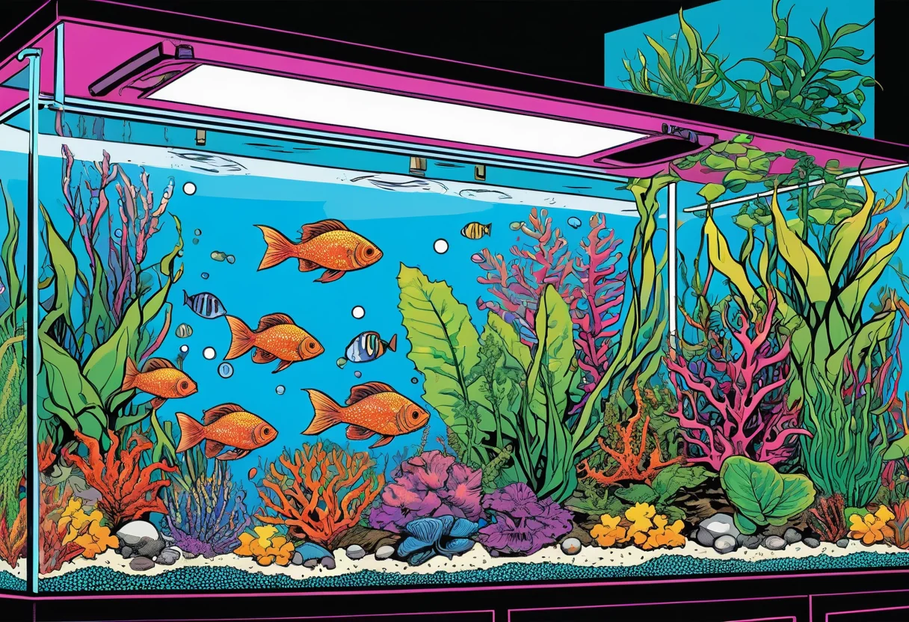

Die Beleuchtung ist eines der wichtigsten Elemente in deinem Aquarium. Sie ist nicht nur für die Optik verantwortlich, sondern steuert das Pflanzenwachstum, den Tag-Nacht-Rhythmus der Fische und beeinflusst das gesamte biologische Gleichgewicht. Anders als oft angenommen, geht es nicht darum, möglichst viel Licht ins Becken zu bringen – sondern die richtige Lichtmenge, -farbe und -dauer für deine spezifische Bepflanzung zu finden.
Eine gute Aquarienbeleuchtung besteht aus mehreren Komponenten: der Lichtquelle selbst (LED, T5, HQI), dem Reflektor, der Lichtsteuerung und nicht zuletzt der Positionierung über dem Becken. In diesem Guide erfährst du alles, was du über Aquarium-Beleuchtung wissen musst – von den technischen Grundlagen über die richtige Wahl für dein Becken bis zur praktischen Umsetzung.
Pflanzen betreiben Photosynthese – sie brauchen Licht, um aus CO₂ und Wasser Zucker und Sauerstoff herzustellen. Ohne ausreichend Licht können Pflanzen nicht wachsen, werden krank und sterben ab. Gleichzeitig fördert zu viel Licht Algenwachstum und kann Fische stressen. Die richtige Balance ist der Schlüssel zu einem gesunden Aquarium. Die Beleuchtung bestimmt auch maßgeblich die Optik deines Aquariums. Mit verschiedenen Lichtfarben kannst du Stimmungen erzeugen – warmweiß für ein natürliches Ambiente, kaltweiß für klares Pflanzenwachstum oder bunte RGB-Farben für Effektbeleuchtung.
LED-Beleuchtung ist heute der Standard für Aquarien jeder Größe. LEDs sind energieeffizient, langlebig und bieten eine enorme Flexibilität bei der Lichtfarbe und -intensität. Moderne LED-Leisten können gedimmt werden, simulieren Sonnenauf- und -untergänge und lassen sich per App steuern. T5-Röhren sind die ältere Technologie, werden aber immer noch gerne für große Becken eingesetzt, da sie eine gleichmäßige Ausleuchtung bieten. Sie sind günstiger in der Anschaffung, verbrauchen aber mehr Strom und müssen häufiger gewechselt werden. HQI-Strahler (Halogen-Metalldampflampen) sind die Profi-Wahl für tiefe Becken über 60 cm. Sie erzeugen ein sehr helles, punktuelles Licht, das tief ins Wasser eindringt. Der Nachteil: Sie werden heiß und sind energieintensiv.
Die alte Faustregel "Watt pro Liter" ist bei LED nicht mehr anwendbar. Stattdessen spricht man von Lumen (Lichtstrom) und Lux (Beleuchtungsstärke). Für ein Gesellschaftsbecken mit durchschnittlichem Pflanzenbesatz reichen etwa 20-40 Lumen pro Liter. Für ein Hightech-Aquarium mit CO₂-Anlage und anspruchsvollen Pflanzen sind 50-70 Lumen pro Liter empfehlenswert. Die Eindringtiefe ist entscheidend: Je tiefer das Becken, desto mehr Licht wird benötigt, um den Bodengrund zu erreichen. Bei Becken über 50 cm Höhe kommen oft mehrere LED-Leisten oder leistungsstarke Einzelstrahler zum Einsatz.
Pflanzen brauchen bestimmte Wellenlängen des Lichts für die Photosynthese. Rotlicht (660 nm) und Blaulicht (450 nm) sind die wichtigsten Bereiche. Gute Aquarien-LEDs kombinieren verschiedene Farbkanäle, um ein volles Spektrum abzudecken. Warmweiße LEDs (2700-3500 Kelvin) betonen Rot- und Gelbtöne und lassen Fische natürlich erscheinen. Kaltweiße LEDs (6500-8000 Kelvin) fördern das Pflanzenwachstum und lassen das Wasser klarer wirken. Viele moderne LED-Leisten bieten RGB-Kanäle (Rot, Grün, Blau), mit denen du die Lichtstimmung individuell anpassen kannst.
Eine Beleuchtungsdauer von 8 bis 10 Stunden pro Tag ist für die meisten Aquarien ideal. Längere Beleuchtungszeiten fördern Algenwachstum ohne zusätzlichen Nutzen für die Pflanzen. Eine kurze Mittagspause (2-3 Stunden Pause) kann helfen, das Algenwachstum zu reduzieren. Die meisten Pflanzen kommen mit 8 Stunden gut aus. Ein konstanter Tag-Nacht-Rhythmus ist für die Fische wichtig. Moderne LED-Leisten mit integrierter Dimmer-Funktion können einen natürlichen Sonnenverlauf simulieren.
Ein reines Fischaquarium benötigt weniger Licht als ein Pflanzenaquarium. Fische fühlen sich bei gedämpftem Licht wohler. Ein Gesellschaftsbecken mit durchschnittlichem Pflanzenbesatz kommt mit einer Standard-LED-Leiste aus. Ein Aquascaping-Becken mit anspruchsvollen Pflanzen benötigt eine leistungsstarke LED mit hohem Lichtoutput und einem vollen Spektrum. Ein Garnelenbecken kommt meist mit weniger Licht aus, da viele Garnelenarten eher dämmerungsaktiv sind.
Bei der Auswahl der Beleuchtung solltest du auch auf die Abmessungen deines Beckens achten. Die Leiste sollte nicht kürzer sein als das Becken, um eine gleichmäßige Ausleuchtung zu gewährleisten. Bei Becken über 100 cm Länge können zwei kürzere Leisten besser sein als eine sehr lange.
Der häufigste Fehler ist eine zu lange Beleuchtungsdauer. Mehr als 10 Stunden Licht pro Tag fördern Algen und stressen die Fische. Auch ein falsches Lichtspektrum ist problematisch – zu viel Blauanteil fördert Fadenalgen. Ein weiterer Fehler ist die Vernachlässigung der Reinigung. Eine dicke Kalkschicht auf der Abdeckung kann bis zu 30% der Lichtleistung blockieren. Reinige deine Leisten regelmäßig. Auch die Höhe der Beleuchtung über dem Becken ist entscheidend – je höher, desto geringer die Lichtintensität am Bodengrund.
▶ Hochwertiges Fischfutter bei Amazon entdecken
Die richtige Beleuchtung ist eine der lohnendsten Investitionen in dein Aquarium. Sie entscheidet über Pflanzenwachstum, Algenkontrolle und das Wohlbefinden deiner Fische. Mit LED-Technik hast du heute alle Möglichkeiten, die perfekte Beleuchtung für dein Becken zu finden. Investiere lieber etwas mehr in eine qualitativ hochwertige LED-Leiste mit dimmbaren Kanälen – das zahlt sich in gesünderen Pflanzen und weniger Algen aus.
Hast du Fragen zur Aquarienbeleuchtung? Schreib uns – wir helfen dir gerne bei der Wahl der richtigen Lampe für dein Becken!
[ AdSense-Werbefläche ]